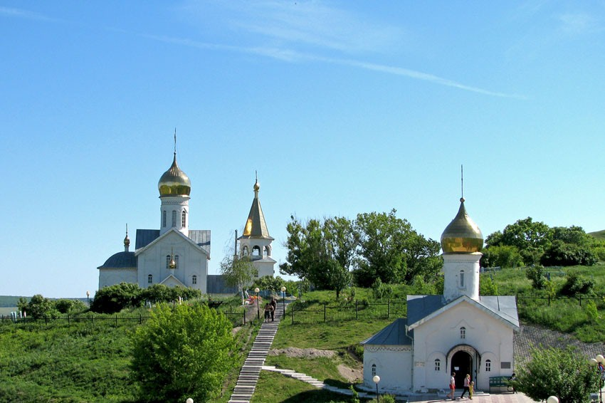
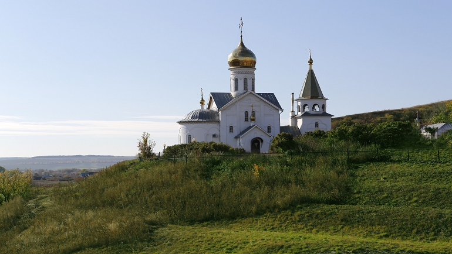

Свято-Троицкий Холковский монастырь

- Режим работы: С 10:00 до 16:00, по выходным с 11:00
- Стоимость услуг: добровольное пожертвование
- Местоположение: Холки, Белгородская обл., 309573
Свято-Троицкий Холковский монастырь находится
в Чернянском районе Белгородской области, на
берегу реки Оскол. Он расположен на террасе
мелового холма и привлекает внимание туристов
не только архитектурой, но и пещерами со
множеством коридоров общей площадью около
255 квадратных метров. Многие храмы
Белгородской области открыты для посещений,
но Свято-Троицкий Холковский монастырь –
единственное место, где можно пройти по таинственным
подземным коридорам, которые еще несколько столетий
назад были местом уединения монахов.

Холковский монастырь был основан в 1620 году иноком
Геласием по указу царя Алексей Михайловича. По преданиям,
именно в этом месте князь Игорь
Святославич встретился со своим братом Всеволодом перед
их выступлением против половцев в 1185 году. В период
с 1764 до 1830 годов монастырь не был действующим, но
после началось его возрождение. На сегодняшний день
это одно из самых востребованных туристических мест
в Белгородской области.

Это место представляет интерес для всех,
кто интересуется историей региона, религией и
архитектурой. Решая, что посмотреть в Чернянке
и Белгородской области в целом, не стоит пренебрегать
этим значимым архитектурным комплексом. От здания
монастыря можно подняться на вершину холма, к колокольне
, откуда открывается прекрасный вид на окрестности.
К ней ведут 298 ступеней. Сельский туризм в регионе
предусматривает знакомство с бытом членов монастырской
братии. На территории комплекса размещаются огороды,
сад и пасека. В обители есть и столярная мастерская.
Официальный сайт монастыря.